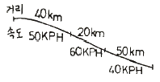
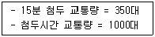
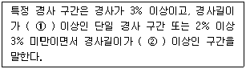
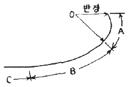
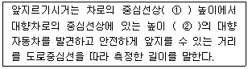
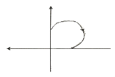
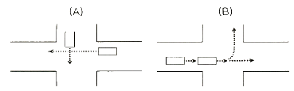
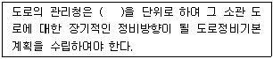
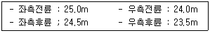

교통기사 (2007-09-02 기출문제)
1과목: 교통계획
1. 사람 통행 실태조사 결과에 따른 전수화(全數化)과정으로 옳은 것은?
- 통행자·비통행자 구분 → 목적·수단통행구분 → 기본 O-D표 구축 → 전수화O-Dvy 도출 → 신뢰성 검증
- 통행자·비통행자 구분 → 지역별통행구분 → 전수화계수 산출 → 기본O-D표 구축 → 전수화 O-D표 도출
- 통행자·비통행자 구분 → 가구면접조사자료 수정 → 기본O-D표 구축 → 전수화 O-D표 도출 → 신뢰성 검증
- 통행자·비통행자 구분 → 목적·수단통행구분 →전수화O-D표 도출 → 기본O-D표 구축 → 신뢰성 검증
(정답률: 알수없음)

2. 출발지, 목적지별 교통량조사(Origin and Destination Survey)방법에 해당되지 않는 것은?
- 터미널 승객조사
- 폐쇄선조사
- 시험차 주행에 의한 방법
- 가구방문조사
(정답률: 알수없음)
3. 다음 중 Cordon line 설정시 고려해야 할 사항과 가장 거리가 먼 것은?
- 행정구역 경계선
- 도로나 철도 노선
- 행정동(洞)의 위치
- 통행량 분포도
(정답률: 알수없음)
4. 전국 도로망의 주 골격을 형성하는 주요도로는?
- 주 간선 도로
- 집산 도로
- 국지 도로
- 보조 간선도로
(정답률: 알수없음)
5. 집계 로짓모형을 이용하여 각 존별 교통수단분담율을 추정하고자 할 때 적합하지 않는 설명변수는?
- 통행시간
- 승용차선택확률
- 통행비용
- 차외통행시간(접근시간 등)
(정답률: 알수없음)
6. 다음 통행배분 방법 중 용량제약(Capacity Constraint) 방식을 사용하지 않는 것은?
- 분할배분법(Incremental Assignment)
- 반복배분법(iterative Assignment)
- All-or-Nothing 배분법
- 확률적 배분법(Probabilistic Assignment)
(정답률: 알수없음)
7. A와 B의 2존간 현재통행량이 100통행이고 A존의 통행발생량은 현재이 150통행에서 장래 225통행으로, B 존의 통행발생량은 현재이 200통행에서 장래 700통행으로 예측될 경우 장래 존 AB간 통행량을 평균인자(성장인자)모형으로 예측한 값은?
- 100
- 200
- 250
- 300
(정답률: 70%)
8. 통행 발생 모형중의 하나로서 통행발생량과 같은 종속변수를 소득이나 자동차 보유대수 등의 설명 변수들에 의해 교차분류시켜 도출해 내는 단순하고 이해하기 쉬운 모형은?
- 로짓모형
- 카테고리분석법
- 다중회구분석법
- 프라타법
(정답률: 알수없음)
9. 일반적으로 교통기관의 서비스 수준에 가장 둔감한 통행목적은?
- 업무통행
- 통근통행
- 쇼핑통행
- 자유통행
(정답률: 67%)
10. 도시교통계획 수립시 가구조사를 위하여 표본크기를 결정할 때 고려사항이 아닌 것은?
- 연구목적 및 자료의 용도
- 통계적인 정확도
- 전수화방법
- 연구 범위내의 인구
(정답률: 알수없음)
11. 어느 주차장의 평균 주차시간은 2시간이다. 한 대의 차량이 도착했을 때 이 차량이 1시간 미만 주차할 확률은? (단, 주차시간의 분포는 음지수분포를 따른다.)
- 33.3%
- 35.3%
- 37.3%
- 39.3%
(정답률: 40%)
12. 경제성 평가기법 중 내부수익률에 관한 설명으로 옳은 것은?
- 사업의 수익성을 측정할 수 있다.
- 평가과정과 결과를 이해하기 어렵다.
- 다른 대안과 비교하기 어렵다.
- 사업의 절대적인 규모를 고려하지 못한다.
(정답률: 알수없음)
13. 교통수단의 특성에 따른 통행자의 선택이 아니라 사회, 경제변수에 따라 선택패턴이 결정되며, 통행발생과 통행분포 단계 사이에 사용되는 교통수단선택모형은?
- 통행단모형
- UMODEL 형
- UMTA모형
- 통행교차모형
(정답률: 알수없음)
14. 대중교통의 특성에 대한 설명 중 옳지 않은 것은?
- 대량·집약적이고 비용의 저렴성 등을 나타낸다.
- 환경오염이 비교적 적다.
- 불특정 다수의 수송에 용이하다.
- 수송경로의 유연성이 크다.
(정답률: 90%)
15. 통행조사 결과를 검증하거나 보완하기 위해 조사지역 내에 하나 혹은 몇 개의 선을 그어 이 선을 통과하는 차량을 조사하는 방법을 무엇이라 하는가?
- 교통존(traffic zone)조사
- 폐쇄선(cordon line)조사
- 스크린라인(screen line)조사
- 희망선(desire line)조사
(정답률: 알수없음)
16. 다음 중 4단계 교통수요 추정방법에 사용되는 모형이 단계별로 알맞게 제시된 것은?
- 원단위법 - 프라타모형 - 로짓모형 – 최단경로법
- 간섭회귀모형 - 원단위법 - 프로빗모형 - FHWA모형
- 프로빗모형 - 카테고리모형 - 로짓모형 – 용량제약최단경로법
- 회구분석법 - 프로빗모형 - 간섭회귀모형 - 최단경로법
(정답률: 알수없음)
17. 어느 도시에서 한 방향 노선길이가 20km인 버스노선을 왕복운행속도 20km/h, 배차간격 10분으로 운행하고자 한다. 이 노선의 운행을 위한 최소필요 버스대수는?
- 6대
- 8대
- 10대
- 12대
(정답률: 알수없음)
18. 통행배분(Trip Assignment)모형 중 정태적 모형에 대한 설명으로 옳지 않은 것은?
- 고정된 경로비용을 토대로 교통량을 부하한다.
- 최소비용경로 알고리즘을 적용한다.
- 링크교통량이 통행비용에 대해서 매우 민감하게 나타난다.
- 다수의 대안적 경로에 교통량이 분산배정된다.
(정답률: 알수없음)
19. 교통수요분석을 통해 구한 도로구간의 년평균 일교통량(ADT)이 25만대이다. 첨두시간 교통량 비율이12%, 스크린 라인 조사결과 구한 교통량이 25000대/시 일 때, 이 도로의 교통량 보정계수는?
- 0.10
- 0.83
- 1.20
- 1.25
(정답률: 알수없음)
20. 경제성 분석에 사용되는 순현재 가치(NPV)분석법에 대한 설명으로 옳지 않은 것은?
- 교통사업의 경제성분석시 보편적으로 사용
- 편익을 비용으로 나눈 비율의 결과가 가장 큰 대안을 선택하는 방법
- 할인율을 적용하여 장래의 비용, 편익을 현재 가치화
- 대안 선택에 있어서 정확한 기준을 제시하고 다른 대안과 비교하기 용이
(정답률: 84%)
2과목: 교통공학
21. 차량이 움직이는데 발생되는 저항 중 노면과 타이어의 마찰 및 엔진 압축에 따른 내부저항 또는 에너지 손실을 무엇이라 하는가?
- 공기저항
- 곡률저항
- 회전저항
- 경사저항
(정답률: 알수없음)
22. 20/20의 시력을 가진 운전자가 80m의 거리에서 교통표지판을 읽을 수 있다. 만약, 이 교통표지판내 글자크기가 15cm 라고 하면 20/50의 시력을 가진 운전자는 이 표지판을 읽기 위해 얼마의 거리가 필요한가?(오류 신고가 접수된 문제입니다. 반드시 정답과 해설을 확인하시기 바랍니다.)
- 16m
- 31m
- 40m
- 48m
(정답률: 알수없음)
23. 어떤 차량이 시속 50kph로 40km를 주행하고 60kph로 20km를 40kph로 50km를 주행하였다. 전체 구간의 공간평균 속도는?

- 50.00km/h
- 47.27km/h
- 46.15km/h
- 43.25km/h
(정답률: 알수없음)
24. 지점 속도의 빈도 분포에 관한 설명 중 옳지 않은 것은?
- 85% 속도는 그 교통류내에서 합리적인 속도의 최대값을 나타낸다.
- 최빈 10kph 속도는 10kph 속도 범위안에서 빈도수가 가장 많은 속도 범위를 나타낸다.
- 보통 85% 속도를 실제 현장의 도로조건에 적합한 교통운영계획을 세우는데 기준 속도로 삼는다.
- 속도의 중앙값이 항상 50% 속도와 일치하는 것은 아니다.
(정답률: 알수없음)
25. 다음의 속도-밀도 모형에 대한 설명 중 옳은 것은?
- 직선모형은 사용하기가 간편하며 현장 관측자료와 비교적 잘 맞는다.
- Greenberg의 지수모형은 낮은 밀도에서는 잘 맞으나 혼잡한 교통류에서는 적합하지 않다.
- UnderWood의 지수모형은 고속에서의 속도 추정값이 현장 측정값과 동일하게 나타난다.
- Greenberg 식에 의하면 밀도가 최대가 되면 속도는 최대 속도의 1/2이 된다.
(정답률: 알수없음)
26. 평균 차두시간이 3초/대인 교통류율이 교통밀도가 50대/km 라면 공간평균속도는 얼마인가?
- 150km/h
- 24km/h
- 16.7km/h
- 75km/h
(정답률: 알수없음)
27. 용량산정시 적용되는 다차로도로의 이상적인 조건이 아닌 것은?
- 측방여유폭 : 1.5m 이상
- 차로폭 : 3.5m 이상
- 유출입 지점수 : 1개/km
- 신호등 밀도 : 0개/km
(정답률: 알수없음)
28. 다음과 같은 조건일 때 첨두시간계수(PHF)는?

- 0.71
- 0.35
- 1.2
- 3.5
(정답률: 알수없음)
29. 고속도로 기분구간의 용어에 대한 설명 중 ( )안에 들어갈 말로 알맞은 것은?

- ① 100m, ② 200m
- ① 200m, ② 500m
- ① 500m, ② 1000m
- ① 1000m, ② 2000m
(정답률: 64%)
30. 교통체계관리기법(TSM)의 특성에 대한 설명 중 옳지 않은 것은?
- 대규모 투자사업이 보완
- 기존시설 및 서비스의 효율적인 활용
- 장기적 편익
- 도시교통체계의 양보다 질 위주의 전략
(정답률: 알수없음)
31. 어떤 특정한 법칙없이 T형 교차로이 한 방향에 도착하는 차량의 70%가 좌회전하고 나머지는 우회전 한다고 한다. 10대의 차량이 한 방향에 도착했을 때 정확히 3대가 우회전할 확률은 얼마인가?
- 0.009
- 0.267
- 0.367
- 0.454
(정답률: 알수없음)
32. 다음 중 이상적 조건하에서의 2차로 지방도로의 시간당 양방향 승용차 교통량은?
- 1800대/시
- 2200대/시
- 2400대/시
- 3200대/시
(정답률: 알수없음)
33. 고속도로 기본구간의 일반지형에서의 승용차 환산계수 중 틀린 것은?
- 평지의 16인승 미만의 승합차는 1.0
- 구릉지의 2.5통 이상의 트럭은 5.0
- 산지의 2.5톤 미만의 트럭은 1.5
- 구릉지의 세미 트레일러는 3.0
(정답률: 알수없음)
34. 어떤 지역을 출입하는 교통량을 파악하기 위해서 그 지역을 둘러싸고 설치되는 선상에서 교통조사를 실시하는 것을 무엇이라고 하는가?
- 가구방문조사
- 차량번호판조사
- cordon line조사
- screen line조사
(정답률: 알수없음)
35. 신호 교차로에서 사용되는 효과척도(MOE)는?
- v/c 비
- 평균통행속도
- 여유용량
- 평균제어지체
(정답률: 알수없음)
36. 어느 신호교차로에서 보행자 횡단시간이 14초이고 차량의 황색신호가 4초일 때 보행자 횡단방향과 같은 방향의 차량의 최소녹색시간은 얼마인가? (단, 보행자 신호등이 있는 경우)
- 16초
- 17초
- 18초
- 19초
(정답률: 알수없음)
37. 운전자의 인지-반응 과정을 순서대로 바르게 나열한 것은?
- 추측 - 지각 - 식별 - 행동판단
- 지각 - 식별 - 추측 - 행동판단
- 지각 - 식별 - 행동판단 - 행동 및 반응
- 식별 - 지각 - 행동판단 - 행동 및 반응
(정답률: 73%)
38. 도시부 교통량 조사시 고려할 사항이 아닌 것은?
- 조사지점은 각 지형에서 각 기능별로 분류된 도로의 대표지점에 설치한다.
- ADT와 교통량을 알아내기 위해서는 상시조사, 보정조사, 전역조사 등이 필요하다.
- 도시부 도로의 경우 ADT를 추정하는 기술의 필요성은 점점 줄어들고 있다.
- 빠른 성장을 나타내는 지역의 경우 안정된 지역에 비해 조사지점의 수가 많아야 한다.
(정답률: 알수없음)
39. 다음의 충격파에 대한 설명 중 틀린 것은?
- 충격파는 상류, 하류측으로 이동하거나 정지할 수 있다.
- 두 교통류간에서 발생하는 충격파의 속도는 교통류율 차이를 점유율 차이로 나눈 값이다.
- 저속차량에 의하여 충격파가 발생할 수 있다.
- 유체역학적 원리에서 나온 개념이다.
(정답률: 알수없음)
40. 신호교차로 감응신호제어(actuated control)시 기대할 수 없는 기능은 무엇인가?
- 실시간 녹색시간 조절
- 실시간 현시 생략
- 실시간 현시순서 조절
- 실시간 주기길이 조절
(정답률: 알수없음)
3과목: 교통시설
41. 도시내 도로의 규모별 구분 중 대로의 기준은?
- 폭 15m 이상 25m 미만인 도로
- 폭 25m 이상 40m 미만인 도로
- 폭 35m 이상 50m 미만인 도로
- 폭 45m 이상 70m 미만인 도로
(정답률: 82%)
42. 콘크리트 포장의 특징이라고 할 수 없는 것은?
- 아스팔트 포장 보다 일반적으로 초기 건설비는 고가이다.
- 절토부와 성토부의 연결지점 즉 부등침하 구간에 적합하다.
- 양시간이 길다.
- 균질의 보조기층구간에 적합하다.
(정답률: 알수없음)
43. 다음 그림에서 도로의 완화곡선부에 해당되는 것은?

- A 부분
- B 부분
- C 부분
- A와 B 부분
(정답률: 알수없음)
44. 다음이 앞지르기시거에 대한 설명 ( )안에 가장 알맞은 것은?

- ① 1.0m, ② 1.5m
- ① 1.0m, ② 1.2m
- ① 1.5m, ② 1.0m
- ① 1.2m, ② 1.0m
(정답률: 알수없음)
45. 다음 중 평면교차를 계획할 때 기본이 되는 고려요소와 가장 거리가 먼 것은?
- 인지성
- 이해성
- 통행성
- 다양성
(정답률: 알수없음)
46. 버스정류장의 길이를 결정할 때 고려할 사항이다. 해당되지 않는 것은?
- 설계속도
- 도로의 형태
- 차량 혼합율
- 버스 정차로의 길이
(정답률: 알수없음)
47. Park and Ride 주차시설을 옳게 설명한 것은?
- 공원이나 유원지에서 입장료를 낸 사람에게 개방된 주차장
- 대중 교통 연계지점에 건설된 주차장으로 이곳에 승용차를 주차시킨 후 대중 교통으로 갈아타게 하기 위해 만든 주차장
- 대규모 유원지, 상가 등에 설치된 주차장
- 공원에서 공원 내를 운행하는 셔틀버스로 갈아타기 위해 만든 주차장
(정답률: 알수없음)
48. 도시지역 간선 도로에서 보도의 최소 폭은?
- 1.50m
- 2.00m
- 2.25m
- 3.00m
(정답률: 알수없음)
49. 설계속도 80km/h, 최대 편경사가 6% 인 평면곡선부 차도의 최소 평면곡선반경은?
- 200m
- 280m
- 380m
- 460m
(정답률: 알수없음)
50. 휴게시설 중 휴게소의 배치시 휴게소 상호간 배치간격의 표준은?
- 30km
- 50km
- 100km
- 120km
(정답률: 알수없음)
51. 고속도로의 설계속도가 100km/h 일 때 버스정류장의 길이는?
- 310m
- 420m
- 470m
- 520m
(정답률: 알수없음)
52. 고속도로에서 비상주차대의 표준 설치 간격은?
- 250m
- 500m
- 750m
- 1000m
(정답률: 알수없음)
53. 공동구의 설치효과에 대한 설명 중 옳지 않은 것은?
- 각종 지하매설물 점용공사에 의한 반복된 노면굴착이 배제되고 따라서 원활한 교통소통과 교통사고 감소에 기여한다.
- 반복된 노면 굴착 및 복구에 따른 경제적 손해와 노면의 지지력 손상을 배제할 수 있다.
- 각종 지하 매설물이 정비되고 합리적인 이용을 기대할 수 있으며, 따라서 점용단면에 대한 수용용량이 감소한다.
- 노상의 점용물건이 지하에 수용되어 도로교통 및 도시미관에 유리하다.
(정답률: 알수없음)
54. 다음 중 종단선형 설계시 오르막차로의 차량속도를 설정하는 기준에 맞지 않는 것은?
- 오르막구간의 설계속도가 80km/h 이상인 경우에는 진입속도는 모두 80km/h 로 한다.
- 오르막구간의 설계속도가 80km/h 미만일 경우에는 진입속도는 설계속도와 같은 속도로 한다.
- 오르막구간의 정점에서의 속도는 오르막구간의 진입속도에서 20km/h을 감한 값 이상의 속도를 유지하도록 한다.
- 설계속도가 60km/h 인 경우에는 오르막차로를 설치하지 않을 수 있다.
(정답률: 알수없음)
55. 지방지역에서 인터체인지의 배치기준으로 옳은 것은?
- 국도 등 주요 도로와의 교차 또는 접근지점은 피할 것
- 인터체인지 세력권 인구가 50000~100000명 정도가 되도록 배치할 것
- 본선과 인터체인지에 대한 총비용 편익비가 최소가 되도록 배치할 것
- 인터체인지 간격이 최소 3km, 최대 20km 이하가 되도록 배치할 것
(정답률: 30%)
56. 어느 건물의 주차용량이 60대, 주차이용대수가 일일 300대이고, 평균주차시간이 3시간이다. 주차장이 하루 20시간 개방된다고 한다면 이 주차장의 주차효율은?
- 0.65
- 0.75
- 0.85
- 0.95
(정답률: 알수없음)
57. 어느 지역의 근린생활시설 주차조사에서 첨두시 주차원단위가 6.3(대/1000m2)이고, 주차이용효율은 주차발생원단위를 누적피크시 건물단위면적당 주차수요로 규정하여 무시하였으며, 계획연면적이 6000m2인 어느 신축 근린생활시설의 주차수요는?
- 35대
- 38대
- 40대
- 45대
(정답률: 알수없음)
58. 다음 좌회전 연결로 설계 시 흔히 볼 수 있는 연결로 형태이다. 이 연결로 형태에 대한 설명으로 옳은 것은?

- 우회전 이동류의 처리 시 사용하며, 루프(Loop)연결로라 한다.
- 새로운 입체교차 구조물을 설치해야 접속이 가능하다.
- 교통량이 많은 곳에 적합하며, 안전한 속도를 유도할 수 있다.
- 진행방향에 대하여 부자연스러운 주행궤적을 그리므로, 운전자의 혼돈할 우려가 있다.
(정답률: 75%)
59. 다음 편면교차로 상충유형을 바르게 짝지어 진 것은?

- (A) 합류상충, (B) 엇갈림 상충
- (A) 합류상충, (B) 분류상충
- (A) 교차상충, (B) 엇갈림상충
- (A) 교차상충, (B) 분류상충
(정답률: 55%)
60. 다음 중 평면교차로에서 도류화를 위한 일반적인 설계원칙과 가장 거리가 먼 것은?
- 회전차량의 대기장소는 직진교통으로부터는 잘 보이지 않는 곳에 위치해야 한다.
- 운전자에게 90°이상 회전하거나 갑작스럽고 급격한 배향곡선 등의 부자연스런 경로를 주어서는 안된다.
- 운전자가 한번에 한 가지 이상의 의사결정을 하지 않도록 해야 한다.
- 교통제어시설은 도류화의 일부분으로서 이를 고려하여 교통섬을 설계하여야 한다.
(정답률: 70%)
4과목: 도시계획개론
61. 선상도시(Linear city)에 관한 설명 중 옳지 않은 것은?
- 도심의 형성이 유리하여 대도시에 적합하다.
- 교통시간을 단축하여 도시의 교통문제를 해결하기 위한 것이다.
- 도시의 다이나믹한 개발과 기능적인 성장을 도모한다.
- 1882년 영국의 마타(A.S,Y. Mata)에 의하여 제안되었다.
(정답률: 알수없음)
62. 도시지역과 그 주변지역의 무질서한 시가화를 방지하고 계획적·단계적인 개발을 도모하기 위하여 일정기간 동안 시가화를 유보할 필요가 있다고 인정되는 경우 도시관리계획으로 결정할 수 있는 구역은?
- 시가화예정구역
- 시가화조정구역
- 개발제한구역
- 개발예정구역
(정답률: 50%)
63. 아디케스법의 기본적 개념으로 가장 알맞은 것은?
- 토지 구획정리에 관한 것
- 도시 장기 발전계획에 관한 것
- 재개발 계획에 관한 것
- 신도시 개발계획에 관한 것
(정답률: 70%)
64. 런던 교외의 레치워스(Letchworth), 웰인(Welwyn)의 두 도시에서 실현되었으며, 위성도시론의 발전에 크게 기여한 도시계획안은?
- 근린주구론
- 전원도시이론
- 지역계획론
- 선상도시론
(정답률: 알수없음)
65. 주거 단지내 도로 계획시 일반적 고려사항이 아닌 것은?
- 단지내 도로의 과속 방지턱 설치
- 곡선형 도로로 감속 유도
- 원활한 통과를 위한 통과도로의 최대화
- 도로패턴은 원활한 접근을 조직적으로 계획
(정답률: 67%)
66. 다음의 각종 도시 기반시설에 대한 설명 중 옳지 않은 것은?
- 광장이란 만남의 공간이자 도시나 지구의 상징적 존재로 도시의 중요한 옥외행사가 행해지는 곳이다.
- 시장은 다수인이 집산을 위해 주간선도로의 교차지점에 설치하는 것이 좋다.
- 도시기반시설 중 공간시설에는 광장, 공원, 녹지, 유원지, 공공공지가 있다.
- 광장은 교통광장, 일반광장, 경관광장, 지하광장, 건축물부설광장으로 세분할 수 있다.
(정답률: 40%)
67. 토지이용계획에 있어서의 공공이익의 요소로서 부적절한 것은?
- 안전성
- 자유성
- 편의성
- 쾌적성
(정답률: 82%)
68. 다음 중 현행 법률에서 정하고 있는 가장 상위의 공간계획은?
- 도시기본계획
- 광역도시계획
- 도시공간구조계획
- 도시관리계획
(정답률: 알수없음)
69. 지체장애인 전용주차장의 주차단위구획의 너비는 최소 얼마 이상으로 하는가? (단, 평행주차형식이 아닌 경우)
- 2.5m 이상
- 2.8m 이상
- 3.0m 이상
- 3.3m 이상
(정답률: 알수없음)
70. 용도지구 중에서 경관을 보호·형성하기 위하여 필요한 지구는?
- 미관지구
- 고도지구
- 경관지구
- 보존지구
(정답률: 알수없음)
71. 대중교통중심도시를 만들기 위해 지하철건설을 계획하고 지하철역 주변에 건설되는 건물에 대해 주차상한제를 폐지하였다. 이는 계획 목표를 달성하는 조건 중 어떤 조건에 위배되는가?
- 목표의 구체성
- 목표의 실현가능성
- 목표의 명확성
- 목표의 계획가치와의 일관성
(정답률: 알수없음)
72. 현재 인구가 1000만인 도시가 등차급수법에 따른 인구증가율이 1%라고 할 때 10년 후 인구수는?
- 1010만
- 1100만
- 1210만
- 1330만
(정답률: 알수없음)
73. Kaiser 와 Chapin이 주장하는 토지이용의 중요한 3가지 가치에 해당되지 않는 것은?
- 사회적 이용 가치
- 시장 가치
- 생태적 가치
- 보전적 가치
(정답률: 알수없음)
74. 다음 중 도로의 위계상 이동성은 가장 높은 반면 접근성이 가장 낮은 것은?
- 주간선도로
- 보조간선도로
- 국지도로
- 고속도로
(정답률: 알수없음)
75. 다음 중 보행자 전용도로의 필요성이 제기된 원인과 가장 관계가 먼 것은?
- 주거단지의 대규모화
- 안정성·쾌적성 확보
- 주차공간의 대형화
- 외부의 생활공간의 체계화
(정답률: 알수없음)
76. 도시계획의 입안은 자료와 정보의 수집, 분석으로부터 출발한다고 볼 수 있다. 자료는 수집되는 자료의 작성주체에 따라 제1차 자료와 제2차 자료로 구분된다. 다음 중 제1차 자료에 해당되지 않는 것은?
- 설문조사결과
- 한국통계연감
- 히어링조사결과
- 전화조사결과
(정답률: 알수없음)
77. 격자형 도로망에 대한 설명으로 옳지 않은 것은?
- 도로기능의 다양성이 결여되어 있다.
- 지형이 평탄한 도시에 적합하다.
- 고대 그리스 식민도시에서 흔히 볼 수 있다.
- 인구 100만 이상 대도시에 가장 적합하다.
(정답률: 알수없음)
78. 다음 중 도시기본계획을 위한 기초조사의 수행 목적에 해당하지 않는 것은?
- 당해 시·군이 차지하는 위치와 역할을 파악하여 계획의 제약으로 삼기 위하여 수행한다.
- 당해 시·군의 발전과정과 현재의 모든 기능을 파악하고 이해하기 위하여 수행한다.
- 당해 시·군의 당면문제를 파악하고 원인과 해결방안을 모색하기 위하여 수행한다.
- 당해 시·군내 지역 상호간의 관계와 전체의 구조를 이해하기 위하여 수행한다.
(정답률: 알수없음)
79. 다음 중 도시계획시설의 결정·구조 및 설치기준에 관한 규칙에 따른 도로의 배치간격으로 적합하지 않은 것은?
- 주간선도로와 주간선도로의 배치간격 : 2천미터 내외
- 주간선도로와 집산도로의 배치간격 : 500미터 내외
- 보조간선도로와 집산도로의 배치간격 : 250미터내외
- 국지도로간의 배치간격 : 가구의 짧은 변 사이의 배치간격은 90미터 내지 150미터 내외, 가구의 긴 변사이의 배치간격은 25미터 내지 60미터 내외
(정답률: 알수없음)
80. 용도지역별 도로율 기준으로 맞는 것은?
- 녹지지역은 10퍼센트 이상 20퍼센트 미만이며, 이 경우 주간선도로의 도로율은 5퍼센트 이상 10퍼센트 미만이어야 한다.
- 주거지역은 20퍼센트 이상 30퍼센트 미만이며, 이 경우 주간선도로의 도로율은 10퍼센트 이상 15퍼센트 미만이어야 한다.
- 사업지역은 20퍼센트 이상 30퍼센트 미만이며, 이 경우 주간선도로의 도로율은 10퍼센트 이상 15퍼센트 미만이어야 한다.
- 공업지역은 20퍼센트 이상 30퍼센트 미만이며, 이 경우 주간선도로의 도로율은 5퍼센트 이상 10퍼센트 미만이어야 한다.
(정답률: 50%)
5과목: 교통관계법규
81. 교통유발부담금 부과징수권자는 누구인가?
- 시장
- 건설교통부장관
- 지방경찰청장
- 행정자치부장관
(정답률: 알수없음)
82. 다음 중 자동차가 앞지르기를 할 수 없는 장소로 틀린 것은?
- 교차로
- 다리 위
- 터널 안
- 편도 2차로 도로
(정답률: 알수없음)
83. 다음 중 도로법에 구분된 도로의 종류에 속하는 것만으로 나열된 것은?
- 고속도로, 일반도로, 자동차전용도로
- 고속국도, 일반국도, 특별시도, 지방도, 시도, 군도
- 국도, 도도, 시도, 군도
- 고속국도, 일반국도, 특별국도
(정답률: 55%)
84. 다음의 도로정비기본계획의 수립에 관한 설명 중 ( )안에 알맞은 내용은?

- 3년
- 5년
- 10년
- 12년
(정답률: 알수없음)
85. 도로굴착에 관한 사항을 심의·조정하기 위하여 설치하는 도로관리심의회에 대한 설명 중 옳지 않은 것은?
- 고속국도와 일반국도에만 설치한다.
- 도로굴착공사의 시행에 따른 도로시설의 안전대책을 심의·조정한다.
- 주요 지하매설물의 안전대책을 심의·조정한다.
- 일반국도의 위원장은 지방국토관리청장이 된다.
(정답률: 알수없음)
86. 부설주차장의 설치대상시설물이 골프장인 경우 부설주차장의 설치기준으로 맞는 것은?
- 시설면적 100m2 당 1대
- 시설면적 150m2 당 1대
- 1홀당 10대
- 1홀당 5대
(정답률: 알수없음)
87. 교통안전법상 교통안전관리자의 분야에 속하지 않는 것은?
- 도로교통안전관리자
- 선박교통안전관리자
- 항만하역교통안전관리자
- 자동차교통안전관리자
(정답률: 40%)
88. 다음의 앞지르기에 대한 설명 중 옳은 것은?
- 모든 차의 운전자는 다른 차를 앞지르고자 하는 때에는 앞차의 우측으로 통행하여야 한다.
- 앞지르고자 하는 모든 차의 운전자는 반대방향의 교통에만 주의를 충분히 기울여야 한다.
- 앞지르고자 하는 모든 차의 운전자는 앞차의 속도·진로와 그 밖의 도로 상황에 따라 방향지시기·등화 또는 경음기를 사용하는 등 안전한 속도와 방법으로 앞지르기를 하여야 한다.
- 앞차가 다른 차를 앞지르고 있거나 앞지르고자 하는 경우에도 앞차를 앞지르기 할 수 있다.
(정답률: 알수없음)
89. 다음 중 광역도시계획의 수립을 위한 기초조사 사항으로 잘못된 것은?
- 주택건설 촉진계획
- 풍수해·지진 그 밖의 재해의 발생현황 및 추이
- 기후·지형·자원·생태 등의 자연적 여건
- 기반시설 및 주거수준의 현황과 전망
(정답률: 60%)
90. 다음 중 주차금지 장소의 기준으로 옳은 것은?
- 소화용방화물통으로부터 5m 이내의 곳
- 화재경보기로부터 5m 이내의 곳
- 소방용 기계·기구가 설치된 곳으로부터 3m 이내의 곳
- 도로공사를 하고 있는 경우에는 그 공사구역의 양쪽 가장자리로부터 3m 이내의 곳
(정답률: 알수없음)
91. 시설물의 부지인근에 단독 또는 공동으로 부설주차장을 설치할 수 있는 부설주차장의 규모 기준은?
- 300대 이하
- 200대 이하
- 100대 이하
- 50대 이하
(정답률: 알수없음)
92. 주차장법에서 부설주차장의 설치대상시설물 중 관람장을 제외한 문화 및 집회시설인 경우 시설면적 몇 m2당 1대를 설치해야 하는가?
- 50m2
- 100m2
- 150m2
- 200m2
(정답률: 60%)
93. 횡단보도의 설치권자에 관한 설명 중 옳은 것은?
- 시장, 군수
- 경찰서장
- 지방경찰청장
- 지역도로관리청장
(정답률: 알수없음)
94. 다음 중 도로에서 일어나는 교통상의 모든 위험과 장해를 방지·제거하여 안전하고 원활한 교통을 확보함을 목적으로 제정된 법규는?
- 교통안전법
- 도로법
- 도시교통정비촉진법
- 도로교통법
(정답률: 40%)
95. 주의표지 중 교차로표지의 설치 기준에 대한 설명으로 맞는 것은?
- 도로에서 속도를 낼 수 없는 교차로에 설치하여야 한다.
- 볼 수 있는 거리가 좋은 도로의 교차로에 설치하여야 한다.
- 교차로로부터 전방 30~120미터 범위 내에 설치하여야 한다.
- 차량 진행방향의 도로 중앙에 설치하는 것을 원칙으로 한다.
(정답률: 알수없음)
96. 교통혼잡 특별관리 구역안에 교통혼잡 또는 특별관리시설물에 따른 교통혼잡을 완화하기 위한 조치 중 통행여건 개선 및 대중교통 이용촉진시책에 포함되지 않는 사항은?
- 교통신호체계의 개선
- 버스전용차로 및 버스정류장의 설치
- 화물차의 운행 제한 및 노상주차장 확충
- 차량 진출입 동선의 변경
(정답률: 70%)
97. 도시계획시설의 결정·구조 및 설치기준에 관한 규칙에 따른 도시계획시설에 대한 설명 중 틀린 것은?
- 횡단보도교의 1분당 보행자수가 200인 이상 240인 미만인 경우 횡단보도교의 폭은 4.5m 이상으로 한다.
- 교통광장은 교차점광장, 역전광장, 주요시설광장으로 구분된다.
- 유원지의 규모는 10000m2 이상으로 당해 유원지의 성격과 기능에 따라 적정하게 하도록 한다.
- 초등학교의 통학거리는 1500m 이내로 하되, 학생들이 안전하고 편리하게 통학할 수 있도록 다른 공공시설의 이용관계를 고려하도록 한다.
(정답률: 알수없음)
98. 다음 중 상업지역의 세분화에 속하지 않는 것은?
- 중심상업지역
- 근린상업지역
- 준상업지역
- 유통상업지역
(정답률: 알수없음)
99. 연석선, 안전표지나 그와 비슷한 공작물로써 그 경계를 표시하여 모든 차의 교통에 사용하도록 된 도로의 부분을 의미하는 용어는?
- 차로
- 차선
- 차도
- 보도
(정답률: 70%)
100. 다음 중 지방도에 대해 올바르게 기술한 것은?
- 지방을 연결하는 자동차전용도로로서 관할 도지사가 그 노선을 인정한 것
- 중요도시, 지정항만, 중요비행장, 국가산업단지, 관광지 등을 연결하는 도로로서 관할도지사가 그 노선을 인정한 것
- 간선 또는 보조간선도로를 연결하는 도로로서 관할도지사가 그 노선을 인정한 것
- 시청 또는 군청소재지 상호간을 연결하는 도로로서 관할도지사가 그 노선을 인정한 것
(정답률: 알수없음)
6과목: 교통안전
101. 다음의 횡단보도 설치기준에 관한 설명 중 옳지 않은 것은?
- 횡단보도에는 횡단보도표시와 횡단보도표지판을 설치하는 것이 원칙이다.
- 횡단보행자용 신호기가 설치되어 있는 횡단보도의 경우에는 횡단보도표시를 설치한다.
- 횡단보도는 육교·지하도 및 다른 횡단보도로부터 최소 100m 떨어진 위치에 설치한다.
- 횡단보도를 설치하고자 하는 도로의 표면이 포장이 되지 아니하여 횡단보도표시를 할 수 없는 때에는 횡단보도표지판을 설치한다.
(정답률: 알수없음)
102. 한 차량이 직선 미끄럼을 하여 각 바퀴의 미끄럼흔적의 길이가 다음과 같을 때 이 차량의 미끄럼 거리는?

- 23.5m
- 24.0m
- 24.3m
- 25.0m
(정답률: 알수없음)
103. 야간사고가 많이 발생하는 지점에 대한 개선 대책과 가장 관계가 먼 것은?
- 조명시설 증설
- 반사도가 높은 특수노면표지 설치
- 미끄럼 방지 포장
- 시선유도 표지 설치
(정답률: 알수없음)
104. 스미드(R.G.Smeed)는 교통사고 사망자 수를 나타내는데 변수들을 이용하여 통계적 모델로 작성하였다. 이 때 사용한 변수는?
- 인구수, 자동차 보유수
- 자동차 보유수, 면허소지자 수
- 인구수, 국민 총 생산
- 도로길이, 화물유통량
(정답률: 알수없음)
1⑤. 과속방지설은 차량의 통행속도를 얼마 이하로 제한할 필요가 있다고 인정되는 도로에 설치하는가?
- 20km/시
- 30km/시
- 40km/시
- 50km/시
(정답률: 알수없음)
106. 우리나라 교통사고 중 사고 발생빈도가 가장 높은 지점은?
- 고속도로
- 입체교차지점
- 교차로
- 단일로
(정답률: 알수없음)
107. 교통사고 예방과 피해 감소를 위한 각종 대책들이 대별되어지는, 흔히 3-E 라고도 불리어지는 세 분야에 포함되지 않는 것은?
- 공학(Engineering)
- 환경(Environment)
- 규제(Enforcement)
- 교육(Education)
(정답률: 알수없음)
108. 정지하고 있던 차량이 3m/sec2으로 가속하였을 경우 72km/h가 될 때까지 걸리는 시간은?
- 5.8sec
- 6.7sec
- 7.6sec
- 8.5sec
(정답률: 알수없음)
109. 각각 2차로인 도로가 직각으로 교차하는 네 갈래 교차로에서는 상충의 수가 32개 나타나게 되어 사고의 위험요소로 작용한다. 만약 이 교차로에서 각 진입로마다 좌회전을 금지시키면 상충의 수는 몇 개로 감소하는가?
- 4개
- 6개
- 12개
- 24개
(정답률: 알수없음)
110. 자동차의 노외 이탈사고가 많이 일어나는 곡선부사고 다발 지점에 대한 개선 대책으로서 적당하지 않은 것은?
- 방호책 설치
- 편경사 강화
- 속도제한 표지 설치
- 경음기 사용표지 설치
(정답률: 알수없음)
111. 교통사고의 유발인자를 크게 세 가지로 나눌 때 이에 속하지 않는 것은?
- 도로 사용자
- 교통정책
- 차량
- 환경
(정답률: 알수없음)
112. 교통사고의 특성에 관한 설명 중 옳지 않은 것은?
- 곡선부가 종단경사와 중복되는 곳은 사고 위험성이 크다.
- 2차로 도로에서 시거가 제한되면 사고율이 증가한다.
- 하향경사에서는 상향경사에서보다 교통사고가 많이 발생한다.
- 인터체인지에서 램프의 사고율은 주도로나 램프의 교통량에 가장 크게 영향을 받는다.
(정답률: 알수없음)
113. 교통사고 요인 중 교통환경요인에 해당하지 않는 것은?
- 차량 교통량
- 통행차량 구성
- 보행자 교통량
- 운전자의 운전습관
(정답률: 알수없음)
114. 다음의 사고지점도에 대한 설명 중 옳지 않은 것은?
- 사고가 집중적으로 발생하는 지점에 대한 신속한 시각적 색인을 제공한다.
- 지도상에 핀, 색종이를 붙이거나 표시를 하여 사고지점을 나타내는 것이 가장 일반적이다.
- 상이한 모양, 크기 또는 색채가 사고의 유형이나 정도를 나타내는데 사용된다.
- 다수의 희생자를 포함하는 대형사고를 강조하기 위해 희생자수를 나타내는 것이 일반적이다.
(정답률: 알수없음)
115. 교통사고 충돌도에 관한 다음의 설명 중 옳지 않은 것은?
- 사고의 패턴을 파악할 수 있다.
- 시고다발지점의 물리적 현황을 나타낸다.
- 개선책의 시행에 따른 결과를 분석할 수 있다.
- 축척을 무시하고 작도된다.
(정답률: 59%)
116. 다음 중 안전개선계획의 계획단계에서 이루어지는 작업이 아닌 것은?
- 사고자료의 수집 및 정리
- 안전개선의 시행 계획
- 위험지역의 공학적인 분석
- 제안된 안전개선의 시행을 위한 우선 순위 결정
(정답률: 알수없음)
117. 제한된 시거로 인하여 교차로에서의 보행자사고가 많이 발생할 때의 일반적인 대책으로 적절하지 않는 것은?
- 시야 장애물 제거
- 좌·우회전차로 설치
- 횡단보도 설치
- 다른 보행도로의 유도
(정답률: 알수없음)
118. 한 차량이 연속적으로 20m에 이어 30m의 바퀴자국을 남기고 정지하였을 경우 마찰계수를 0.5라 할 때 이 차량이 초기속도는?
- 60km/시
- 70km/시
- 80km/시
- 90km/시
(정답률: 알수없음)
119. 20km의 도로구간에서 1년 동안 100건의 교통사고가 발생하였다. 조사결과 일평균교통량(ADT)가 12000대일 때 차량 1억대·km당 사고율은?
- 54.2건
- 114.2건
- 164.1건
- 201.4건
(정답률: 50%)
120. 한 차량이 노면마찰계수 0.6에서 15m 미끄러져 6m 언덕 아래로 추락하였으며 추락한 차량이 도로끝으로부터 거리가 5m일 때, 이 차량의 초기속도(kph)는?
- 50.4
- 51.9
- 53.4
- 54.9
(정답률: 알수없음)